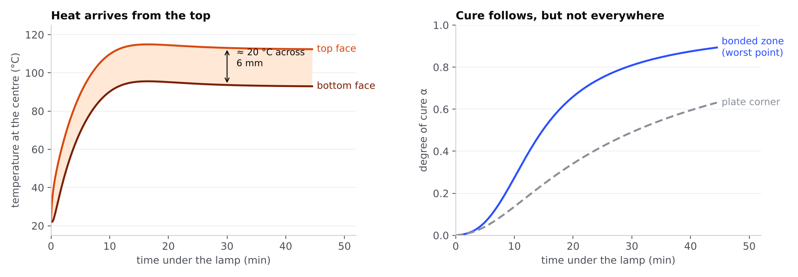
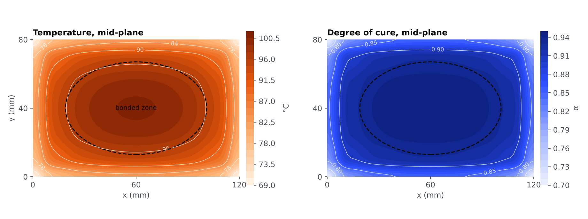
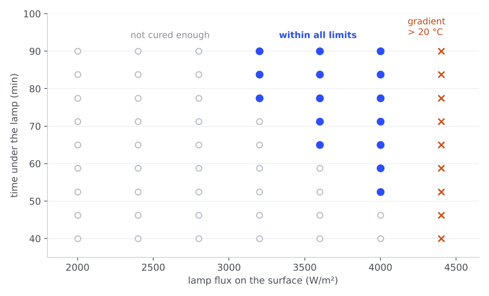

Modelling how a radiant lamp cures a bonded patch
On the G700 nacelle line, a shimming compound took about 8 hours to cure, and the methods team was studying a radiant lamp to speed it up. I wanted to understand what actually limits that kind of heating, so I wrote a 3D heat-and-cure model from scratch in Python.

- v0 · 1DThrough the thicknessA 3 mm slab heated from one side. It showed the top-to-bottom gradient, but could say nothing about edges or corners.
- v1 · 3DA real plate120 × 80 × 6 mm, a lamp footprint, heat lost on every face. Cure now varies across the plate.
- v2 · 3D, checkedMade defensibleBonded zone fixed before any run, consistent orthotropic properties, a three-mesh convergence check.
Temperature and cure, solved together
Reaching a set temperature is not the same as curing: a point can get hot and stay under-cured if it does not stay hot long enough. So the model follows two fields everywhere in the plate — temperature T and degree of cure α — and couples them, because the curing resin also releases heat.
Can the numbers be trusted?
I discretised the plate with finite differences and stepped forward in time explicitly. That scheme is simple but blows up if the time step is too long, so I derived its 3D stability limit and stayed below it.
used: Δt = 1.8 s on the 16 × 12 × 6 grid
The bonded zone (an 82 × 54 mm ellipse) is written into the code before any run, so the criterion cannot be adjusted to the result. Version 1 had defined it after the fact; fixing that was the main correction in v2.
Same heating, three meshes
| Mesh | Δt | Tmax | mean α | zone min α | corner α |
|---|---|---|---|---|---|
| 12 × 8 × 5 | 2.6 s | 115.0 °C | 0.900 | 0.899 | 0.661 |
| 16 × 12 × 6 | 1.8 s | 114.9 °C | 0.902 | 0.893 | 0.631 |
| 20 × 14 × 7 | 1.0 s | 114.9 °C | 0.903 | 0.898 | 0.620 |
Peak temperature and mean cure are stable. The corner value keeps falling as the mesh resolves the edges better, and the bonded-zone minimum is not monotonic (0.899 → 0.893 → 0.898): good enough to compare trends, not to quote a third decimal.
The gradient, not the temperature, is the limit
For a reference cycle — 4,095 W/m² for 44.5 min, chosen to respect all four limits I set (mean α ≥ 0.90, bonded zone ≥ 0.86, peak ≤ 130 °C, top–bottom difference ≤ 20 °C) — the top face heats first and the difference across the thickness reaches 20 °C within two minutes. It stays there for the whole cycle, while the peak never gets near 130 °C.

The corners never catch up
The lamp is only about 15% weaker at the corners, yet they end at α = 0.63 against 0.89 in the bonded zone: they also lose heat through two side faces. Judged on the whole plate, every cycle would look like a failure; judged on the zone that is actually bonded, the question becomes meaningful.

A narrow window between two failures
Running the model over 63 combinations of lamp flux and time maps where a lamp could work. Too little flux, and the bonded zone does not cure in time. Too much, and the top races ahead of the bottom. Only 15 combinations satisfy everything.
The shape of the window is the result, not the exact minutes: with synthetic kinetics, the numbers would move once fitted to the real compound.

A model, not a process
Every parameter is synthetic and non-confidential: no Safran geometry, material or process data is in the model, and none of it has been measured. What it offers is a way of reasoning about the problem, not a cycle to run.
I expected temperature to be the limit. The model said it was the difference between two faces 6 mm apart — something I would not have looked for on the line.
What comes next
Calibrate the lamp and losses against a thermocouple test.
Fit the kinetics to DSC data, then test how sensitive the window is to them.
Check the hand-written solver against Abaqus.